The gallery exhibits both default plots as well as the many modifications one can make.
Modifications with ggplot2
Let’s begin with showing the default plot and common modifications that are made with ggplot2 functions.
- Expand axis to show percentages from 0% to 100%
- Limit plot to show up to 8 years of follow-up
- Add the percent sign to the y-axis label
- Reduce padding in the plot area around the curves
- Add additional tick marks on the x-axis
- Update color of the lines
- Using the ggplot2 minimal theme
gg_default <-
survfit2(Surv(time, status) ~ surg, data = df_colon) %>%
ggsurvfit() +
add_confidence_interval() +
labs(title = "Default")
gg_styled <-
gg_default +
coord_cartesian(xlim = c(0, 8)) +
scale_y_continuous(
limits = c(0, 1),
labels = scales::percent,
expand = c(0.01, 0)
) +
scale_x_continuous(breaks = 0:9, expand = c(0.02, 0)) +
scale_color_manual(values = c('#54738E', '#82AC7C')) +
scale_fill_manual(values = c('#54738E', '#82AC7C')) +
theme_minimal() +
theme(legend.position = "bottom") +
guides(color = guide_legend(ncol = 1)) +
labs(title = "Modified",
y = "Percentage Survival")
gg_default + gg_styled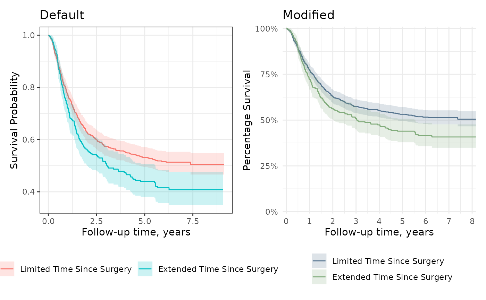
Grey-scale Figures
You may need a black and white figure and that is achieved using grey-scale ggplot2 functions.
survfit2(Surv(time, status) ~ surg, data = df_colon) %>%
ggsurvfit() +
add_confidence_interval() +
scale_color_grey() +
scale_fill_grey() +
labs(title = "Grey Scale")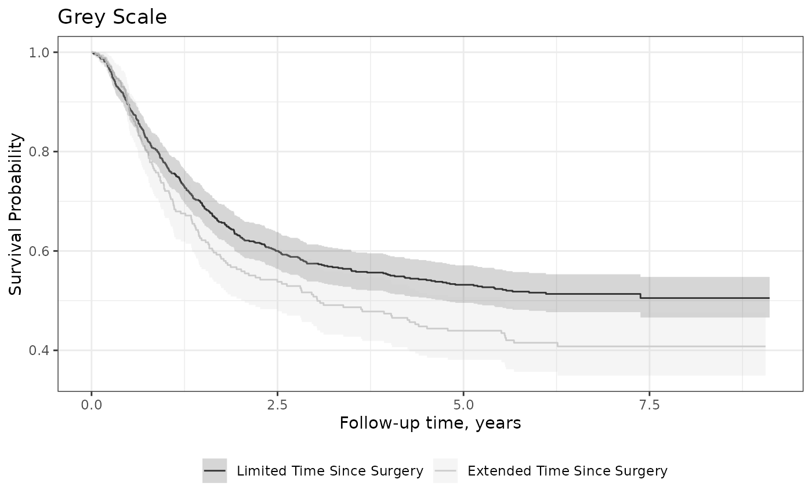
KMunicate
To get figures that align with the guidelines outlined in “Proposals on Kaplan–Meier plots in medical research and a survey of stakeholder views: KMunicate.”, use the theme_ggsurvfit_KMunicate() theme along with these function options.
survfit2(Surv(time, status) ~ surg, data = df_colon) %>%
ggsurvfit(linetype_aes = TRUE) +
add_confidence_interval() +
add_risktable(
risktable_stats = c("n.risk", "cum.censor", "cum.event")
) +
theme_ggsurvfit_KMunicate() +
scale_y_continuous(limits = c(0, 1)) +
scale_x_continuous(expand = c(0.02, 0)) +
theme(legend.position = c(0.85, 0.85))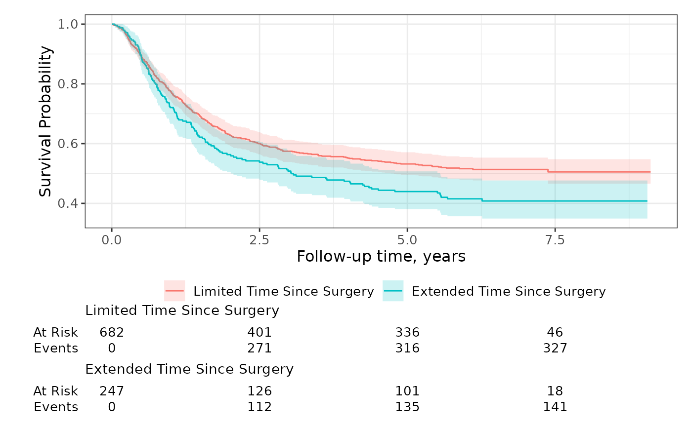
Risk Tables
The default risk table styling is ready for publication.
survfit2(Surv(time, status) ~ surg, data = df_colon) %>%
ggsurvfit() +
add_confidence_interval() +
add_risktable()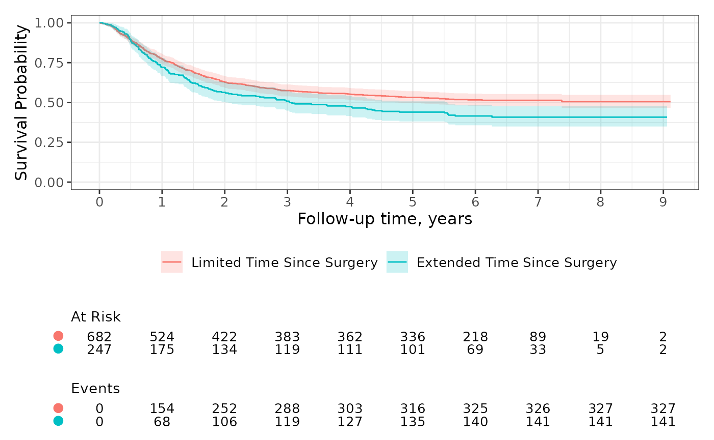
You can also group the risk table by the statistics rather than the stratum. Let’s also add additional time points where the statistics are reported and extend the y axis.
survfit2(Surv(time, status) ~ surg, data = df_colon) %>%
ggsurvfit() +
add_confidence_interval() +
add_risktable(risktable_group = "risktable_stats") +
scale_x_continuous(breaks = 0:9) +
scale_y_continuous(limits = c(0, 1))
Use add_risktable_strata_symbol() to replace long stratum labels with a color symbol.
Without add_risktable_strata_symbol():
km_long_labels <-
survfit2(Surv(AVAL, 1 - CNSR) ~ TRT01P, data = adtte) %>%
ggsurvfit() +
add_risktable(
risktable_stats = "n.risk",
risktable_group = "risktable_stats",
risktable_height = 0.2
) +
scale_x_continuous(breaks = 0:5) +
theme(legend.position = "right")
km_long_labels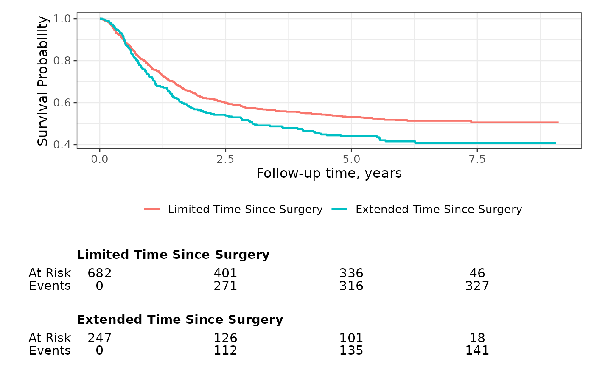
With add_risktable_strata_symbol():
km_long_labels +
add_risktable_strata_symbol()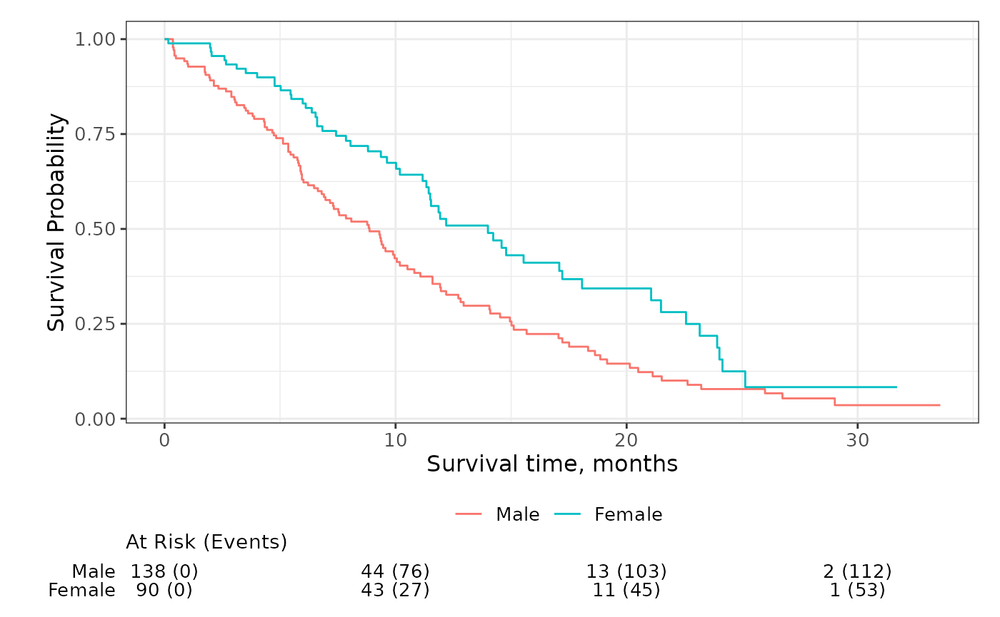
You can further customize the risk table using themes and the add_risktable(...) arguments. For example, use the following code to increase the font size of both the risk table text and the y-axis label.
survfit2(Surv(time, status) ~ surg, data = df_colon) %>%
ggsurvfit(size = 0.8) +
add_risktable(
risktable_height = 0.33,
size = 4, # increase font size of risk table statistics
theme = # increase font size of risk table title and y-axis label
list(
theme_risktable_default(),
theme(axis.text.y = element_text(size = 11),
plot.title = element_text(size = 11, face = "bold"))
)
)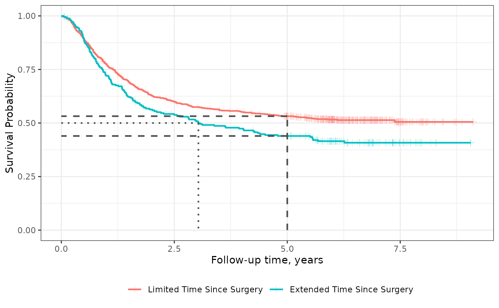
Quantiles and Censor Markings
Add guidelines for survival quantiles and markings for censored patients using add_quantile() and add_censor_mark().
survfit2(Surv(time, status) ~ surg, data = df_colon) %>%
ggsurvfit(size = 0.8) +
add_censor_mark(size = 2, alpha = 0.2) +
add_quantile(y_value = 0.5, linetype = "dotted", color = "grey50", size = 0.8) +
add_quantile(y_value = 0.75, color = "grey50", size = 0.8) 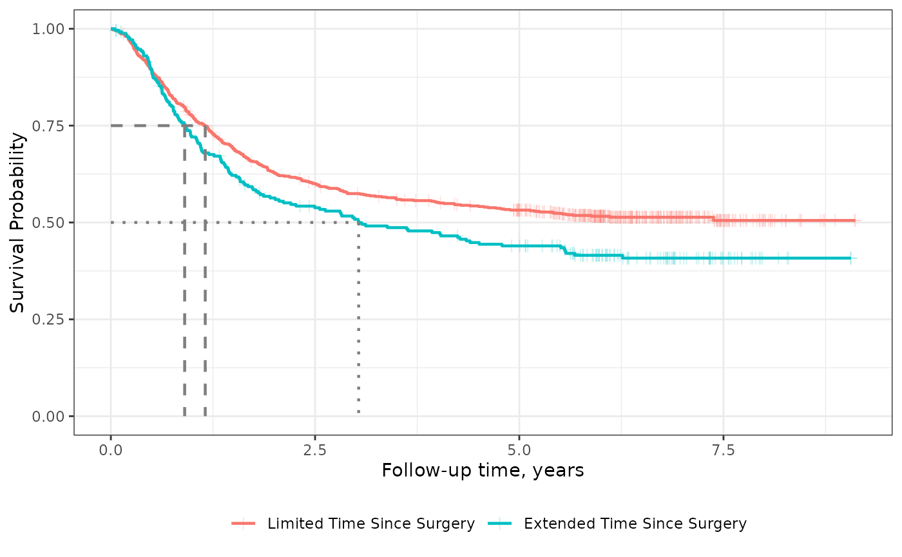
Transformations
Show the probability of an event rather than the probability of being free from the event with transformations. Custom transformations are also available.
survfit2(Surv(time, status) ~ surg, data = df_colon) %>%
ggsurvfit(type = "risk", size = 0.8) +
add_confidence_interval()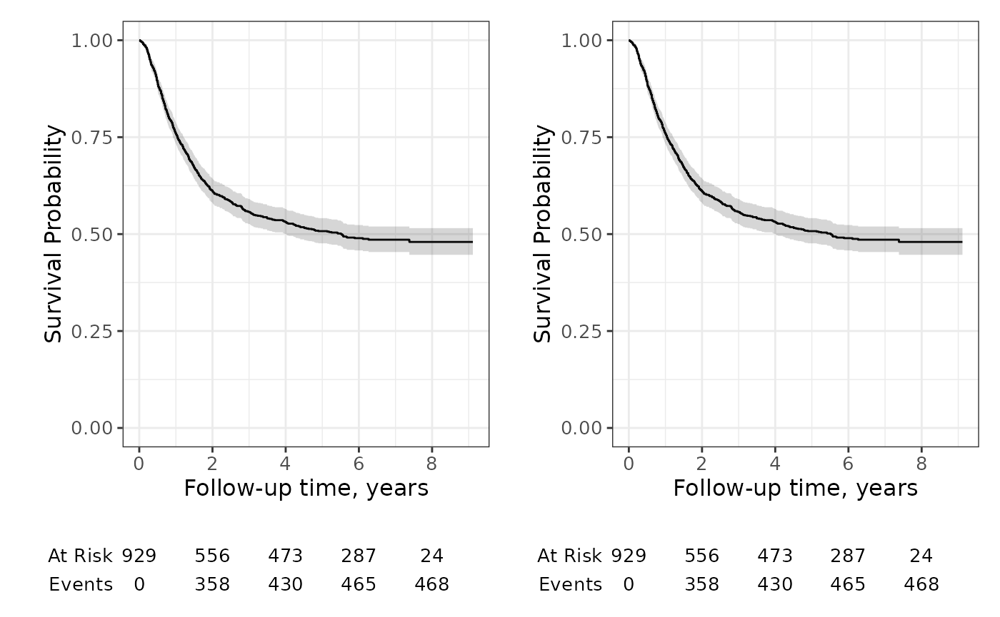
Faceting
Curves created with ggsurvfit can also later be faceted using ggplot2. Note, however, that faceted curves cannot include a risk table.
The ggsurvfit() function calls tidy_survfit() to create the data frame that is used to create the figure. In the data frame, there is a column named "strata", which we will facet over.
survfit2(Surv(time, status) ~ surg, data = df_colon) %>%
ggsurvfit() +
add_confidence_interval() +
facet_wrap(~strata, nrow = 1) +
theme(legend.position = "none") +
scale_x_continuous(n.breaks = 6) +
labs(title = "PFS by Duration between Surgery and Treatment")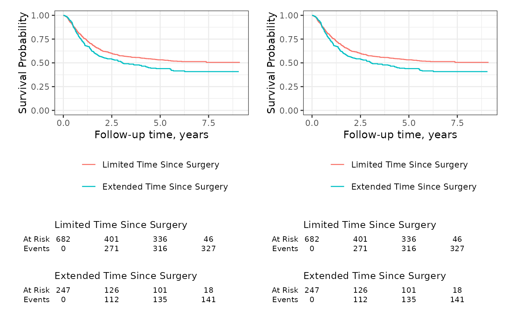
Extensions
Because {ggsurvfit} functions are written as proper {ggplot2} geoms, you can both weave any {ggplot2} functions and ggplot2 extensions, such as {gghighlight}.
survfit2(Surv(time, status) ~ rx, data = df_colon) %>%
ggsurvfit() +
gghighlight::gghighlight(
strata == "Levamisole+5-FU",
calculate_per_facet = TRUE
) +
theme(legend.position = "none")
#> Warning: Tried to calculate with group_by(), but the calculation failed.
#> Falling back to ungrouped filter operation...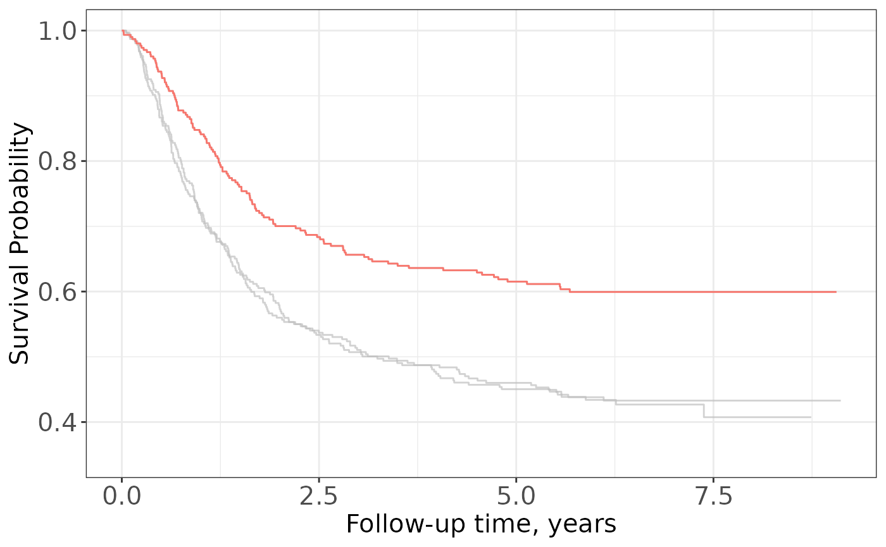